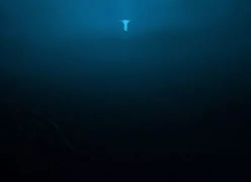

Among the most fearsome creatures in the world, in real life as well as lore, the truly unsettling ones are usually found in deep waters. I mean, just look at the anglerfish for god's sake - if that doesn't look like something straight out of a Lovecraft horror saga, I don't know what does. In Assam, locals have a deep-rooted fear of the Baak, a grotesque looking creature that inhabits ponds and lakes. It kills its victims, then hides the body deep underwater. This malevolent spirit occupies isolated spots where few people venture, and even fewer return from.
The Baak is notorious for its murderous nature - after killing the victim and hiding the body, it takes on the corpse's appearance and goes out in search of more prey. Many a time, people won't even know that the person they're with is not their brother/sister/ familiar, it's a Baak that's just leading them on so it can kill them too.It is said that the Baak carries a pouch containing its own soul. If one manages to grab that pouch, then the Baak will be under your command.
If you can grab the Baak's soul pouch, then you can have complete control over the Baak, like a genie. However, it's no mean feat to get that close to one and live to tell the tale. Would be cool to have an evil genie to do your bidding though. Oh, and finally, for some reason, the Baak loves eating fish. One that subject, we can all relate. On the killing and identity theft however - not so much.